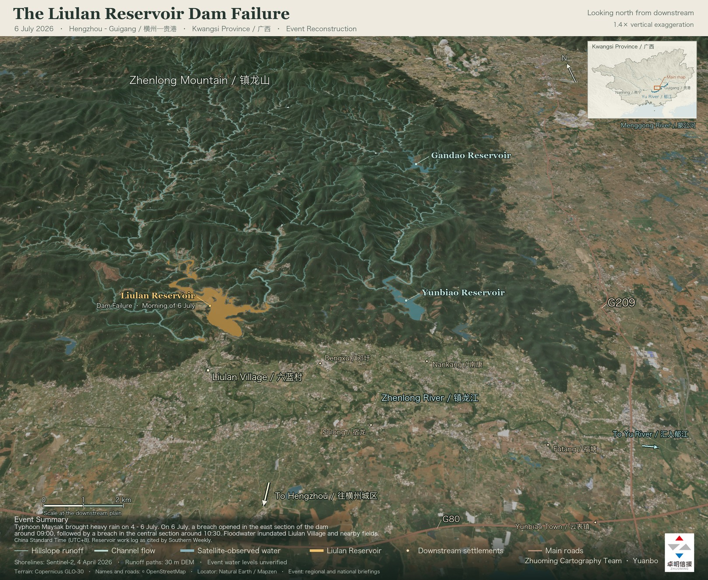
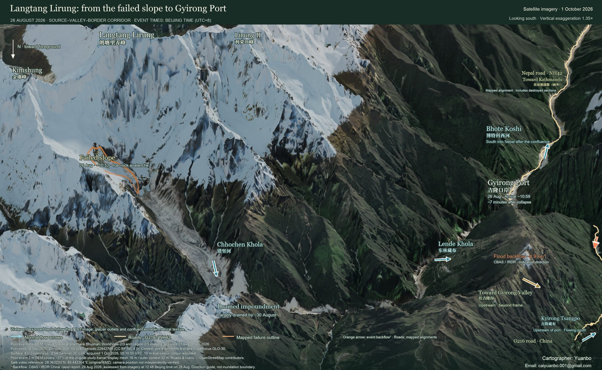
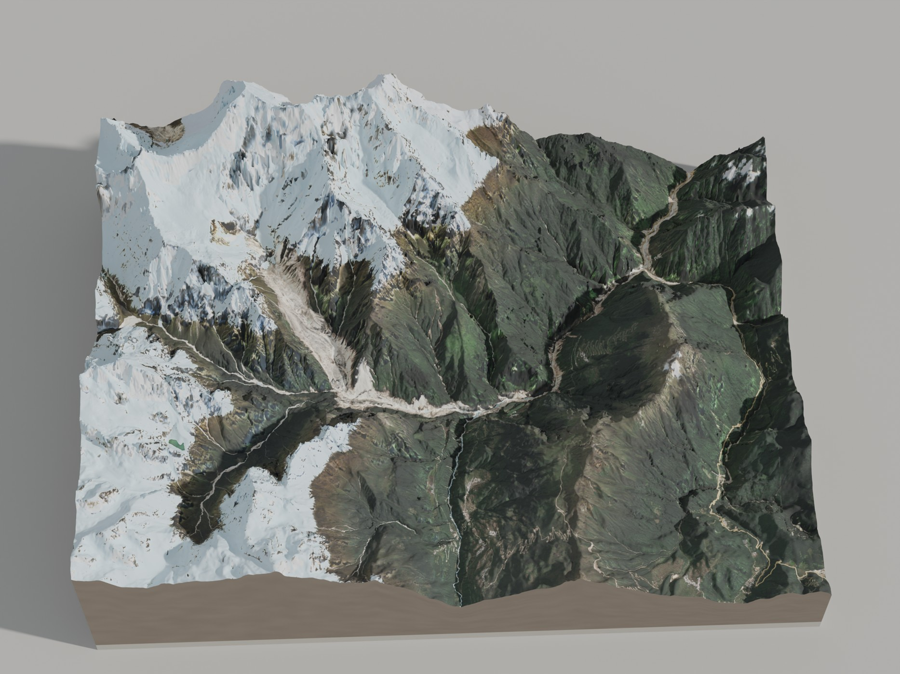

Selected GIS work · Course projects & volunteer mapping
UW Course Work
& volunteer mapping
QGIS map layouts followed by interactive maps and digital storytelling: three University of Washington course assignments alongside a volunteer practice map prepared for the disaster-response organization Zhuo-Ming (卓明).
In progress: GEOG 458 (Advanced Digital Geography) and GEOG 482 (GIS Data Management).
01 / GEOG 360 · QGIS · My first GIS class
Volcanoes in
Iceland’s landscape
The final map brings Holocene and Pleistocene volcanic features into the same view as elevation, contours, roads, and water bodies. It gives the volcanic locations a landscape context, making it possible to compare their distribution across Iceland’s coast, interior, and highlands.
I used separate symbols for the two volcanic groups and a light elevation ramp to keep the terrain readable beneath them. The map combines the Smithsonian Global Volcanism Program’s volcano data, OpenDEM terrain data, and OpenStreetMap features.

GEOG 360 · Extension · Zhuo-Ming (卓明)
The Liulan Reservoir Dam Failure
6 July 2026 · Zhenlong Mountain (镇龙山) · Hengzhou–Guigang (横州—贵港), Kwangsi Province (广西)
From 4 to 6 July, slow-moving Typhoon Maysak and moisture from the southwest monsoon brought sustained heavy rain to Kwangsi Province. Around Zhenlong Mountain, ridgelines separate the catchments of Liulan, Yunbiao, and Gandao reservoirs. Some of the rain that fell within these catchments ran downslope in shallow, dispersed flows. Small gullies collected that runoff, then fed larger channels that concentrated it at the reservoir inlets. Xinhua on Maysak’s rainfall ↗
When inflow exceeds what a reservoir is releasing, water accumulates and the level rises. On the morning of 6 July, water overtopped dams at Liulan and Yunbiao and breaches opened. Floodwater from Liulan inundated Liulan Village and nearby fields. The map follows surface runoff from these three catchments within the much wider storm footprint. This is why the transition from hillslope runoff to channel flow matters: the gullies gather water from many slopes and deliver it in concentrated flows at each reservoir inlet. Xinhua field report on the failures and flooding ↗
Deaths and missing people
- Liulan Reservoir flood: the Nanning briefing reported 26 deaths and 7 people missing as of 11:00 on 9 July 2026. 9 July briefing ↗
- Liulan, Yunbiao, and other reservoir-failure floods in Hengzhou: the wider 21 August update reported 107 deaths and 7 people missing. Xinhua, 21 August update ↗

Watch the runoff animation 20 seconds
Follow dispersed runoff as it joins the gullies and reaches each reservoir. Water keeps moving through channels after the rain stops. The paths come from a 30 m elevation model. Travel timing, line widths and rising reservoir gauges are schematic.
GEOG 360 · Extension · 2026 Nepal landslide at Gyirong Port
Disaster Forensic . Event Reconstruction
About seven minutes separated the collapse on Langtang Lirung from the arrival of the flood at Gyirong Port. At around 10:52 on 26 August 2026, ice and rock broke away from the mountain’s north face. As the debris descended, it picked up water and sediment from the valley floor. The surge swept down Lende Khola and reached the border crossing at about 10:59. At the confluence, part of the surge pushed upstream along the Kyirong Tsangpo. All times are Beijing time (UTC+8).
The temporary lake followed a different timetable. Debris blocked the channel, impounding water that drained over the following days. By about 30 August, the lake had largely emptied. The surge that reached the port on the morning of the 26th had already passed days before.
Human impact on both sides of the border
- China, Gyirong Port area: 43 people were reported dead and 519 missing as of 18:00 on 5 September 2026, Beijing time. Gyirong emergency command briefing, reported by People’s Daily ↗
- Nepal, Rasuwa–Bhote Koshi flood and downstream areas: 1,453 people were reported dead and 5,285 missing as of 19:00 on 26 September 2026, Nepal time. UN situation report citing Nepal’s disaster authority (PDF) ↗
The updates use different dates and reporting areas. The figures are presented as published, with no combined cross-border total.

I made this reconstruction for Zhuo-Ming (卓明) as part of its review of the 2026 Nepal Mega Landslide. Follow the valley floor in the October image and a narrow thread of water is visible within a much wider, pale bed of exposed sediment. The water marks the active channel on the day the satellite passed. The broader strip records where the debris scoured the bed and deposited material.
For the terrain, I used the post-event 2 m digital elevation model published by David Shean and Shashank Bhushan where coverage was available, filling gaps with other elevation data. I overlaid 10 m true-colour imagery acquired by the European Union’s Copernicus Sentinel-2C satellite on 1 October 2026, then lit the terrain in Blender to bring out the ridges and valley floors. The resulting view shows the landscape more than a month after the avalanche.


02 / QGIS learning exercise · Zhuo-Ming (卓明)
Earthquake intensity:
a QGIS learning exercise
An early exercise made while learning QGIS, prepared for the disaster-response organization Zhuo-Ming (卓明). This was volunteer work outside UW coursework.
I made this map while learning QGIS, as a practical exercise for the disaster-response organization Zhuo-Ming (卓明). It combines preliminary earthquake intensity estimates with cities, major roads, and administrative boundaries around Montalbán, Venezuela.
The work gave me practice in clipping raster data, classifying values, choosing symbols, and arranging a map layout. I used a sequential red palette for intensity and kept the reference layers lighter. The notes beside the map identify the data sources, describe the processing steps, and explain that the estimates are preliminary.

Making the map
usable
The intensity surface alone gives little help in locating a named city or transport route. Adding those reference layers connects the estimates to places readers can identify. The accompanying notes retain the provenance of the estimates and the processing steps, making the map easier to assess and reuse.
Source credits on the original map include the Global Earthquake Rapid Response Team, China University of Geosciences (Wuhan), the Lanzhou Institute of Seismology, USGS, and OpenStreetMap.
03 / GEOG 465: GIS Database and Programming
Hydropower, rivers,
and the China–India frontier
For my GEOG 465 assignment, I built a Leaflet map examining how proposed hydropower infrastructure, river systems, historical places, and disputed frontier space overlap in the eastern Himalaya. I prepared spatial layers in QGIS, converted them to GeoJSON, and selected attributes for labels and popups.
River names are part of the map’s interpretation. English labels help readers navigate the interface, while popup fields retain Chinese names, Tibetan or Tibetic transliterations, aliases, and name meanings where available. The aim is to keep the map legible while preserving the local naming context.

The image records the feedback and revision process. The course submission focused on the proposed tunnel, major rivers, historical sites, and disputed-area boundary; the published map continued to develop afterward.
What feedback
changed
Peer feedback made the first view and visual hierarchy central design questions. I widened the opening extent, made the proposed tunnel more prominent, reduced the weight of contextual layers, and added a legend. I also made the disputed-area polygon non-interactive so that it would not intercept clicks on rivers and places beneath it.
The project left me with a further question: how much should a map ask readers to discover for themselves? An exploratory interface supports comparison, but a guided narrative can explain why a particular reach or place matters. Following the Tsangpo explores that question through a story map assignment for GEOG 458: Advanced Digital Geography.
The boundary layer provides context for academic discussion and does not establish an authoritative territorial interpretation.
04 / GEOG 458: Advanced Digital Geography · Course assignment
Following the Tsangpo
I built this story map for GEOG 458, which I am currently taking at the University of Washington.
This scroll-driven story map follows Bailey and Morshead’s 1913 journey through four chapters. Historical maps, photographs, and travel accounts help readers examine where the expedition travelled and where its account relied on testimony or inference.
I used changes in map extent, selected places, and short evidence notes to guide readers through the route. The assignment gave me a way to connect source comparison with the pacing and interaction of a digital narrative.

Photograph: AI-assisted restoration derivative of a plate published with Bailey’s 1914 account. The project page retains the source notes and links to the original scan.
GEOG 458 / Lab 5
AIS vessel tracks in Puget Sound
This lab explores vessel movement using AIS observations. The accompanying conversion notebook groups records by vessel and preserves their timing for use in a deck.gl map.
Open the Lab 5 interactive webpage ↗